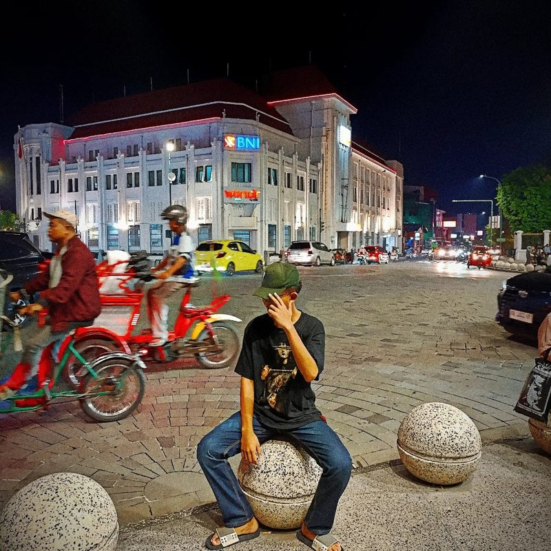

Jalan-Jalan
Menjelajahi tempat baru untuk mencari sudut pandang dan ide segar.
// siswa · MA 1 Paciran
Saya suka menuangkan ide lewat gambar, menjelajah tempat baru, dan sesekali menyelesaikan level game yang bikin penasaran. Website ini adalah "buku sketsa" digital saya — sederhana di luar, penuh coretan di dalam.
01 — Tentang Saya
Nama saya Muhammad Azmil Anwar, siswa MA 1 Paciran. Kelebihan yang paling saya banggakan adalah menggambar — biasanya dimulai dari coretan iseng di pinggir buku tulis, lalu berkembang jadi sketsa yang lebih serius.
Selain menggambar, saya senang jalan-jalan untuk cari suasana dan inspirasi baru, serta main game sebagai cara bersantai sekaligus melatih strategi dan kesabaran.

jeda sejenak, cari ide di jalan.
02 — Hobi & Minat
Menjelajahi tempat baru untuk mencari sudut pandang dan ide segar.
Hal yang paling saya kuasai — dari sketsa cepat sampai ilustrasi detail.
Cara favorit untuk bersantai sambil melatih strategi dan fokus.
03 — Galeri Karya
*Cara termudah: beri nama fotomu persis karya1.jpg dan karya2.jpg,
lalu upload bareng file ini ke GitHub (taruh di folder utama, sejajar dengan index.html).
Gambar otomatis muncul, tanpa perlu edit kode.